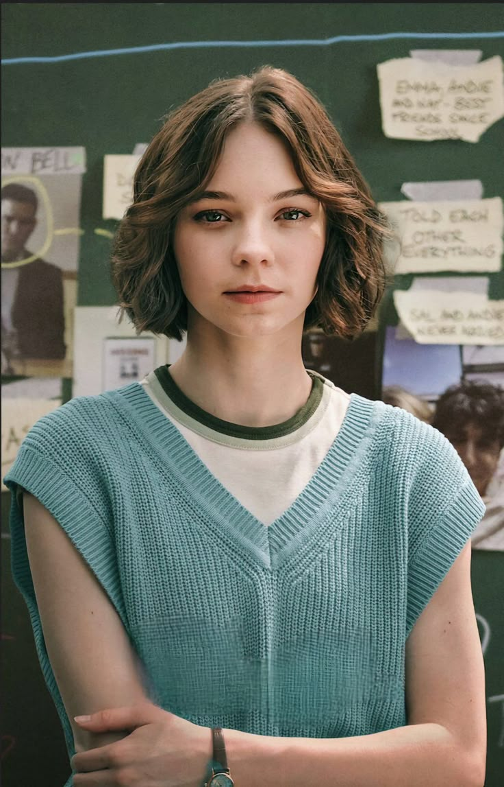
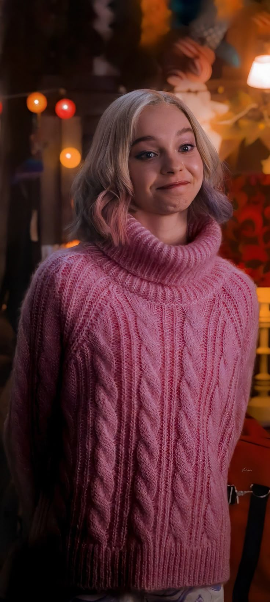

|  |
Inicios: Emma comenzó su carrera actoral a una edad temprana, participando en cortometrajes y producciones teatrales. |
 |
Emma Myers ha aparecido en varias series de televisión. Aquí hay algunas de las más destacadas:
Wednesday (2022 - presente): Interpreta a Enid Sinclair, una estudiante de la academia Nevermore y amiga de Wednesday Addams.
The Baker and the Beauty (2020): Participó en esta serie romántica que sigue la historia de un panadero y una supermodelo.
A Taste of Summer (2019): Aunque es más conocida por su papel en "Wednesday," también tuvo un papel secundario en esta serie.
Además de estas series, Emma ha trabajado en algunos proyectos menores y cortometrajes. Su papel en "Wednesday" ha sido el más notable y ha contribuido a su creciente popularidad. |
|  |
se dedica principalmente a la actuación. Ha trabajado en cine y televisión, destacándose por su papel en la serie "Wednesday". Además de actuar, también ha estado involucrada en proyectos relacionados con la producción y ha mostrado interés en la escritura y dirección, aunque su enfoque principal hasta ahora ha sido la actuación. |